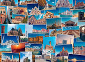
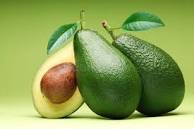
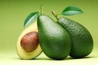

There is a lot of joy in travelling to places where you have never been to before. I would like to vist the below destinations soon
Below is one of my favorite things
Food is an every day thing but special food on special occasions is great
 

Sport is good for keeping healthy. We are encouraged to stay active in various ways not limited to